ES118 Lecture #2
Interacting with a computer system
Ufuk Baler, MSc. & Asst. Prof. Dr. Fethi Okyar
Computer systems
Computer systems are composed of four key components as follows
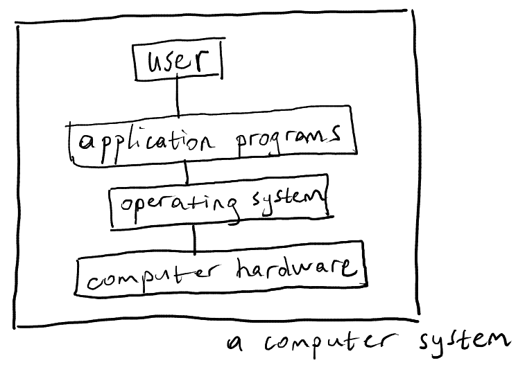
User
You're the user, who uses application programs via a keyboard, or mouse. When you give an input to a program, you receieve a visual feedback from a monitor connected to the computer hardware.
The feedback can be either a text, or a fancy window with a fancy user interface.
As a result, you are interacting with a computer to solve your issues that you face in your life in an efficient manner.
These issues might include
- writing a cooking recipe
- watching a Youtube video
- playing games
- summing up two numbers
- copying and pasting files
- writing Python programs to solve anything
and many more.
Application programs
The application programs are created to ease our daily lives, and can be written in different programming languages.
Some of the application programs that we use in this course include terminal (emulator), file manager, text editor, programming environment, and version control program.
programming environment: integrated development environment (IDE)
An IDE is a programming environment, which bundles a terminal, a file manager, and a text editor.
In addition, a workspace, and a command history display variable values, and the commands previously entered in the terminal, respectively.
Further utility tools are shipped with an IDE, they will be mentioned in the next lectures.
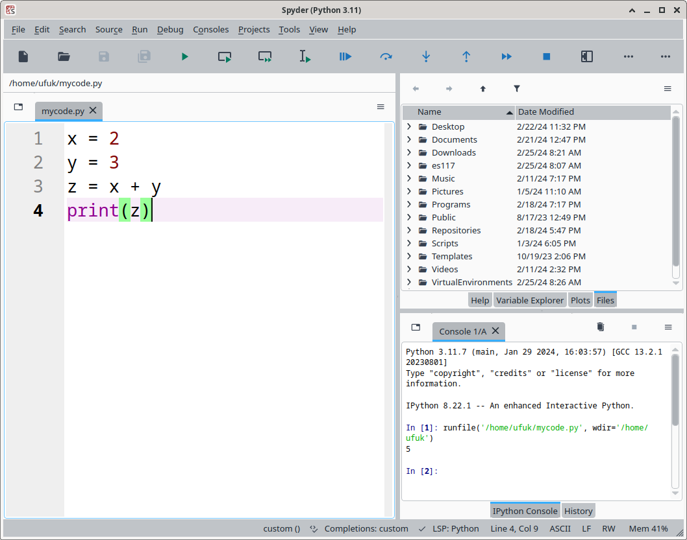
Figure 1: Spyder IDE terminal.
text editor
A text editor is a piece of application program that fundamentally
- inserts text characters from the keyboard input
- copies/pastes/cuts text characters using keyboard shortcuts or a mouse
- navigates through the text
- saves or loads text to or from a text file, respectively
file manager
A file manager browses and edits directories and files in the file system.
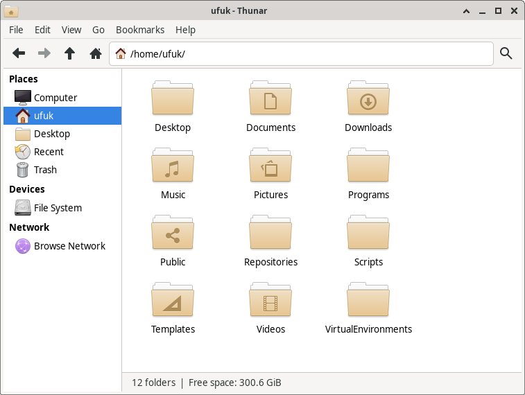
Figure 2: It can be seen that same directories in Figure 5 are also depicted in the file manager.
terminal (emulator)
A terminal is a visual emulation of computer terminals in modern computer systems.
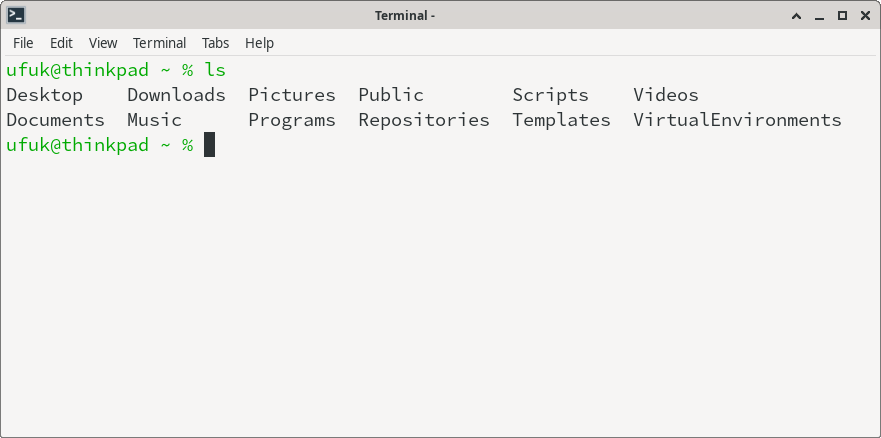
Figure 3: Output of ls command for listing directories and files of a user
It takes commands through text input, and the computer gives text output in response.
Using a terminal is very powerful and efficient way to do things in a computer.
a version control program
git is the most common version control program. It creates commits (versions) of files, in order to record, and track the changes in the files.
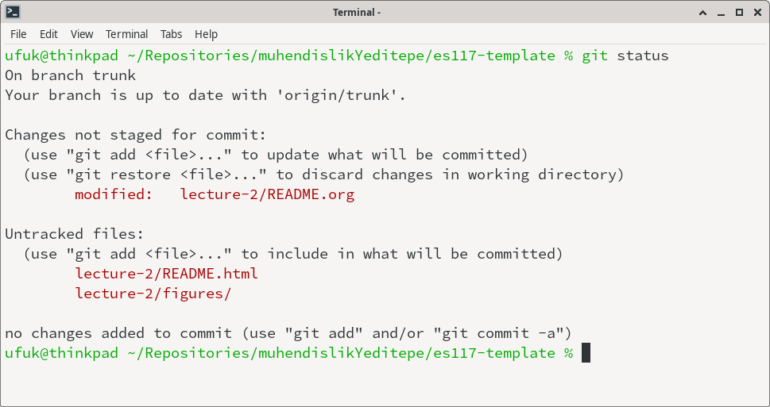
Figure 4: Output of git status shows the modified, and untracked (newly created) in a git repository directory called es117-template
Computer hardware
In general, a computer has a hardware organization as indicated below
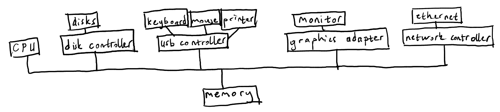
central processing unit (CPU)
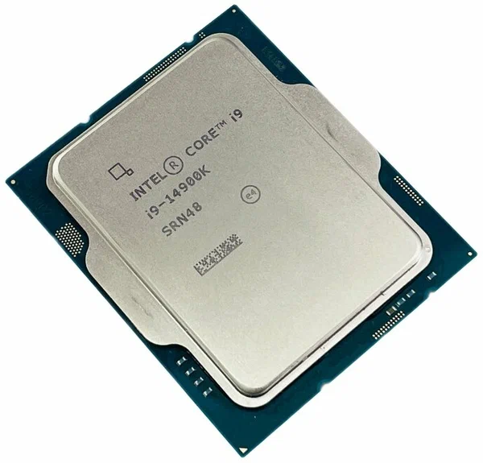
CPU executes operations.
You can think of CPU as the brain of a computer.
It can perform basic operations such as,
- arithmetic
- comparison of two quantities
- jumping (loops)
This image's author is ArtyomK2707 and, it is licensed under CC BY-SA 4.0 DEED.
{kind=link}
memory (main memory)
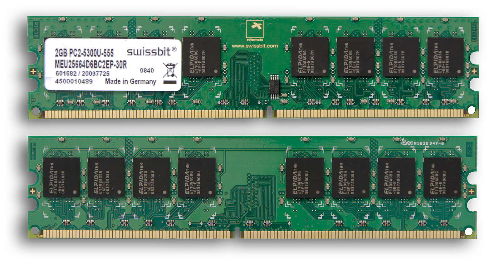
The memory stores, and provides data to CPU.
It is nearly fast as the CPU.
Data inside the memory is deleted when the computer is shutdown.
Author of this image is An-d, and it is licensed under CC BY-SA 3.0 DEED
{kind=link}
disks (secondary memory)
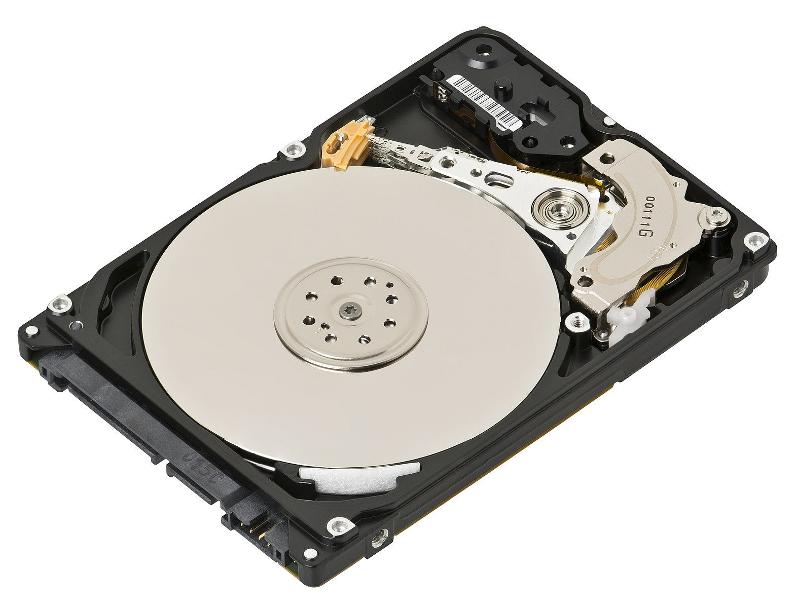
A Disk is also used to store data, but it is much slower than a memory.
Advantage of disks over memories is that they can store information even if the computer is shutdown.
(1) This image's author is Evan-Amos, and it is licensed under CC BY-SA 3.0 DEED. (2) This image's author is MatteX, and it is licensed under CC0 1.0 DEED. (3) This image's author is User5515, and it is licensed under CC BY 3.0 DEED.
{kind=link}
{kind=link}
{kind=link}
network (secondary memory)
A network connection helps the user to get data over a network of computers.
The network can be thought of a data storage place, but it is slowest compared to memory and disk.
peripherals
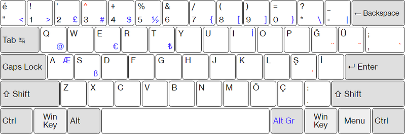
- Keyboard
- Digits
0, 1, 2, 3, 4, 5, 6, 7, 8, 9 - Letters
A-Z - Characters
- arithmetic operators
- plus (addition):
+ - hyphen (substraction):
- - slash (division):
/ - asterisk (multiplication):
*
- plus (addition):
- brackets
- parantheses:
() - square brackets:
[] - curly brackets:
{}
- parantheses:
- comparison
- less than:
< - larger than:
>
- less than:
- arithmetic operators
This image's author is Anlztrk, and it is licensed under CC BY-SA 4.0 DEED
- Digits
{kind=link}
- Punctuation
- dot:
. - comma:
, - colon:
: - semi-colon:
; - exclamation mark:
! - question mark:
?
- dot:
- Special characters:
- equal:
= - backslash:
\ - single quation mark:
' - double quotation mark:
" - tilde:
~ - percent:
% - ampersand:
& - caret:
^ - underscore:
_
- equal:
- Editing keys
- Delete
- Backspace
- Space
- Return/Enter
- Caps Lock
- Mod keys
- Ctrl
- Alt
- Shift
- Tab
- Text navigation
- Right, Left, Up, Down arrows
- Home, End
- Page Up, Page Down
- Left mouse button:
LMB - Right mouse button:
RMB - Middle (scroll) mouse button:
MMB
Operating system (OS)
An OS
- is a program that manages the computer hardware
- provides a basis for the user programs
- acts as an intermediary between the computer user and the computer
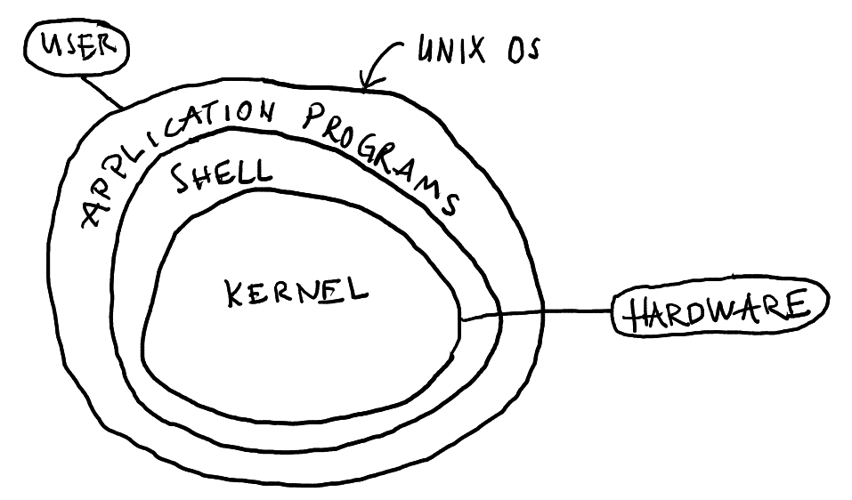
In general, there is not a sufficient definition of an operating system.
Fundamental aims of operating systems are to execute (run) programs, and allocate the resources for the programs.
Such operations require common functions of allocating, and controlling resources. They are brought together into one piece of software: the operating system.
The structure is composed of three layers:
- the kernel: a computer program handles hardware and software interaction
- the shell: command interpreter, which looks after the communication between the user and the system itself
- the utility/application programs
User interaction
Terminal
In the old days, 1960s, users are connected to a computer called mainframe. The computations are performed on the mainframes. A user has access the operating system through terminals that capable of accepting input commands, and giving output from the mainframes. These terminals are in the form of a keyboard equipped with a printer.
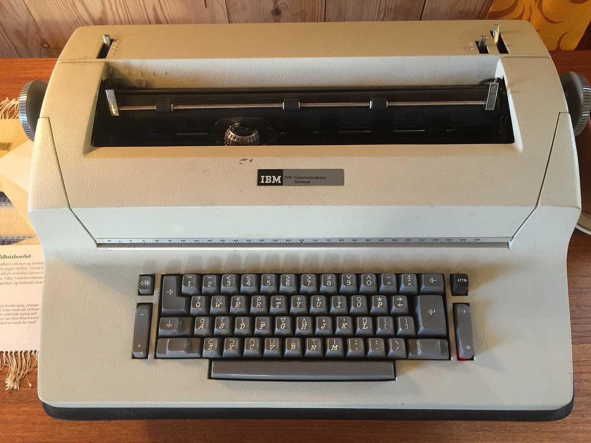 This image's author is Oscar.nierstrasz, and it is licensed under CC BY-SA 4.0 DEED.
{kind=link}
Later, rows of characters are contained within video display terminals, which became popular.
 This image is published into the public domain.
This image is published into the public domain.
{kind=link}
Today, those old terminals are emulated by a graphical user interface (GUI) window in our screens.
Command prompt
- The command prompt is the area, where a user can type characters to send input commands via the shell
- They are displayed in the terminals, and ready to accept characters from the keyboard
Shell
Remark that the shell is a command-line interpreter, which provides a layer of interaction between the user, and the kernel. An interpreter is kind of a translator that converts commands to machine language. Converting this bit of code to the machine language is the responsibility of the interpreter. Therefore, machine language may look like
10101000001110100101010101010010
CPU operates on this machine code, and in turn outputs.
File system abstraction
A file is the unit of storages, and it can hold anything
- a text
- a program
- digital pictures
- sound
and so on.
A directory (or a folder) is a special file, where the information of other files are stored. In other words, a directory is a container of zero or more files.
Basic file system commands
- Home directory is a special directory where the user's personal files reside
In [7]: %cd ~
/home/ufuk
In [8]: %pwd
Out[8]: '/home/ufuk'
In [9]: %ls
anaconda3/ Media/ Repositories/ Videos/
Desktop/ Music/ resources/ VirtualEnvironments/
Documents/ Pictures/ Scripts/
Downloads/ Programs/ Templates/
matlab_R2024a_Linux.zip Public/ test.m
- The working directory is another special type of directory that you're currently in
- The filesystem can be modeled as a tree, which has root directory shown by
/
Classwork #1, assigned to 24 Feb 2025
- How to access Python console through Spyder IDE?
- How to define a variable in Spyder IDE?
- Is
5 = xcorrect way to define a variable?